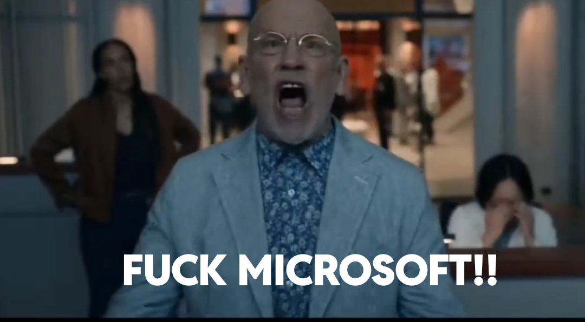

Facebook 專案首頁
這裡收集我的技術觀察、資料整理與公開分享內容。每篇文章都會保留清楚的主題、封面與閱讀入口，讓朋友或同事點進來時不用迷路。
整理近期技術觀察、研究文章與搜尋快報，方便從首頁快速進入完整內容。

整理 Microsoft Secure Boot 憑證更新、企業端部署、BitLocker、Linux shim 與 Proxmox 等社群關注重點。
彙整 Windows Codex、Computer Use、桌面 App、CLI 與繁體中文相關來源，並標出企業 Windows 環境導入時需要注意的權限、沙盒與資料風險。
首頁保留最新內容、封面圖與摘要，讓訪客一進來就知道可以讀什麼。
加入基本 SEO 與社群預覽資訊，貼到聊天室或社群平台時更完整。
之後新增文章時，只要複製貼文卡片區塊，改標題、日期、圖片與連結即可。